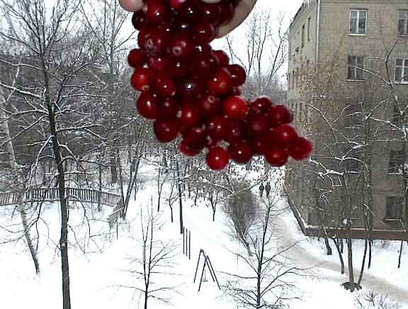
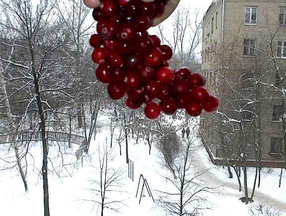

Cranberries in a window

The bunch of red grapes actually are frozen cranberries. I cleaned the berries in water, then put them in a freezer. This very old photo was made by 1mp camera HP-c200.

The bunch of red grapes actually are frozen cranberries. I cleaned the berries in water, then put them in a freezer. This very old photo was made by 1mp camera HP-c200.